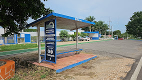

La Universidad Tecnológica del Mayab, institución de educación superior, consciente de la importancia de formar profesionales competentes en su área laboral, con sentido humano y social; tiene como compromiso brindar servicios educativos integrales y de la mejor calidad, asegurándola a través de evaluaciones y de la ...
Proporciona asesoría por campo disciplinar. Incorpora recursos tecnológicos. Cuenta con materiales didácticos de apoyo al aprendizaje. Se adapta al ritmo y avance individual del estudiante.
| regresar al menu |